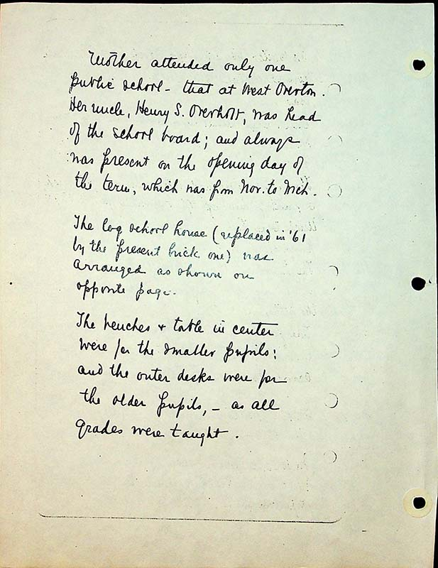
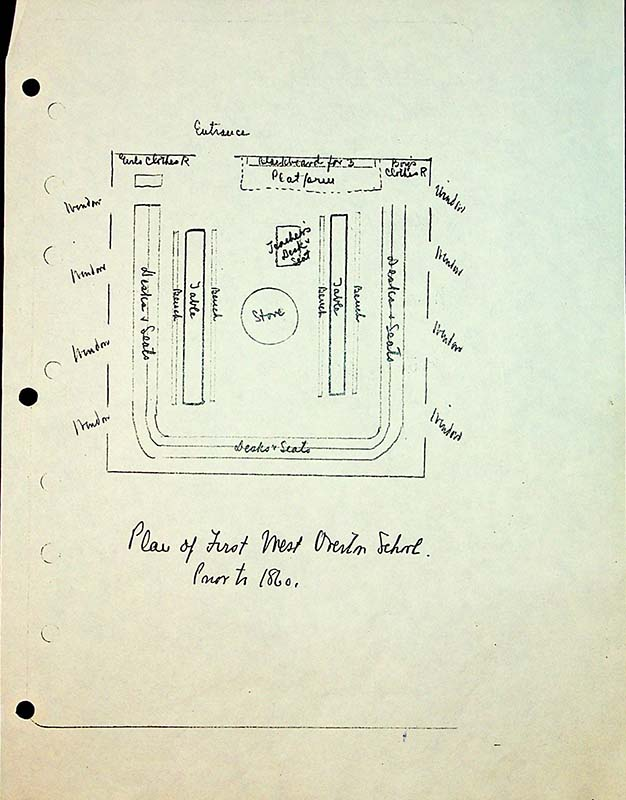

Mother attended only one public school- that at West Overton. Her uncle, Henry S. Overholt, was head of the school board; and always was present on the opening day of the term, which was from Nov. to Mch.
The log school house (replaced in ‘61 by the present brick one) was arranged as shown on opposite page.
The benches & tables in center were for the smaller pupils; and the outdoor desks were for the older pupils, as all grades were taught.
[Entrance at top of Page, windows along sides, 4 each side. ]:
[Cloak storage areas are in the corners on wall with entrance. ]:
[Platform with blackboard for 3 to right side of entrance.]:
[Stove in center of room.]:
[Teachers desk and seat between platform and stove.]:
[Tables with benches on both sides of the tables are on either side of the stove.]:
Place of First West Overton School